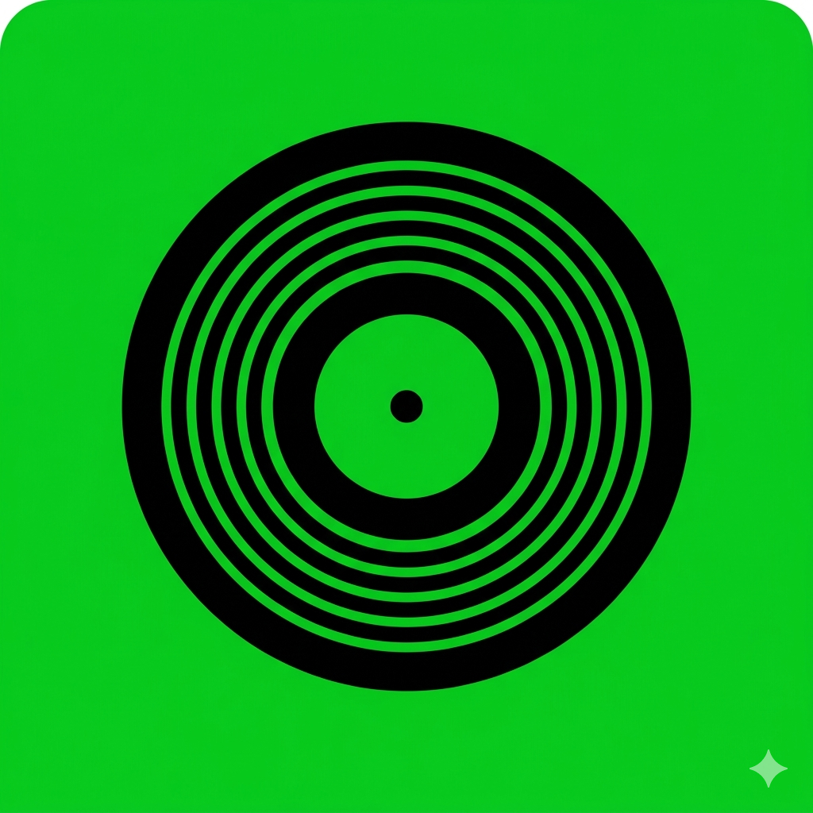

Meu primeiro post
Por: Victor Olavo
Bem-vindo ao meu blog, aqui será feito a indicações para expansão de seu espectro musical, indicando albuns e artistas para você
Este blog será sobre indicações de albuns e artistas!

Por: Victor Olavo
Bem-vindo ao meu blog, aqui será feito a indicações para expansão de seu espectro musical, indicando albuns e artistas para você